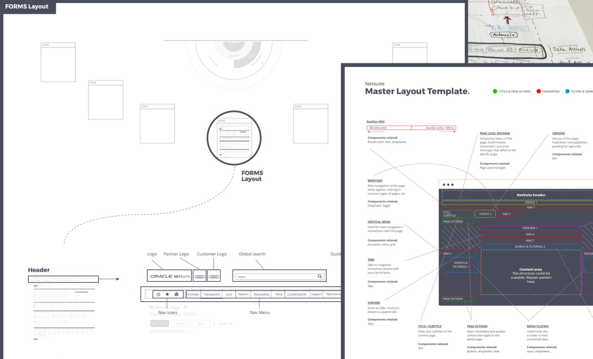
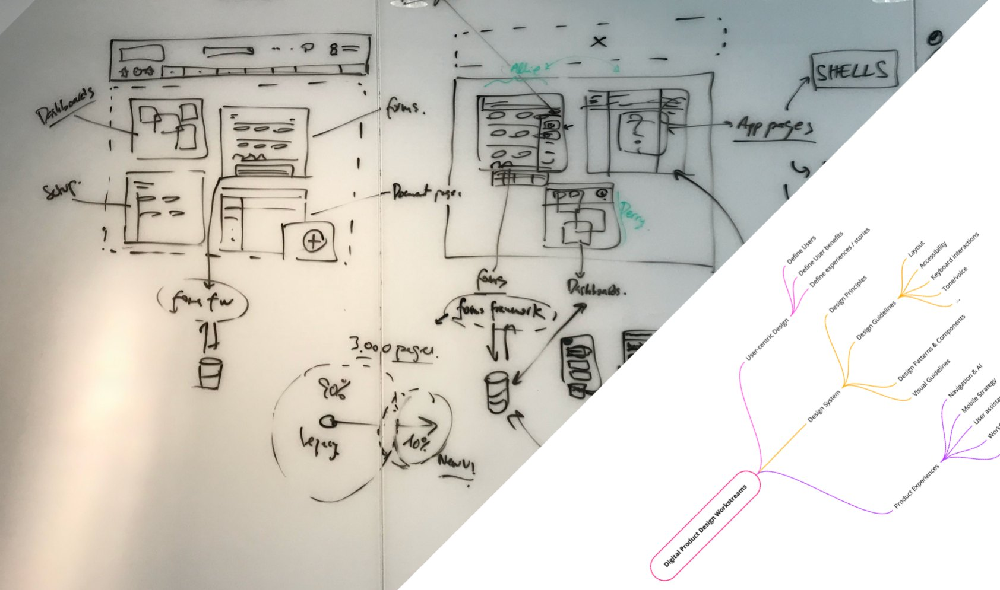
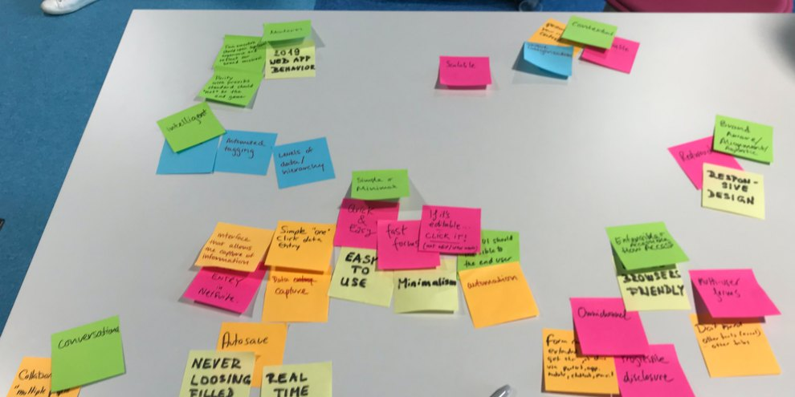
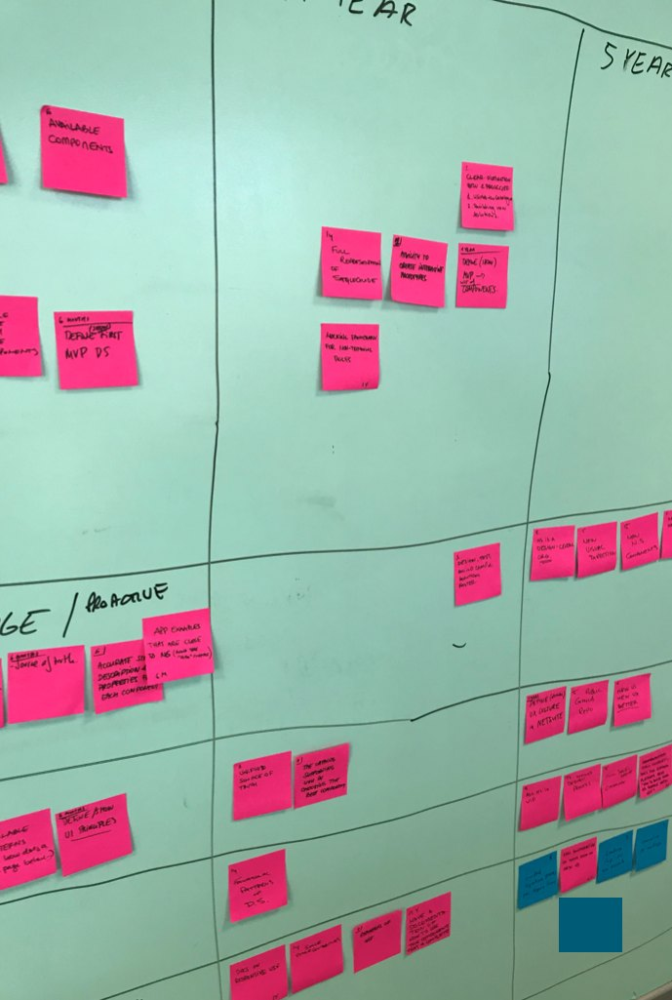
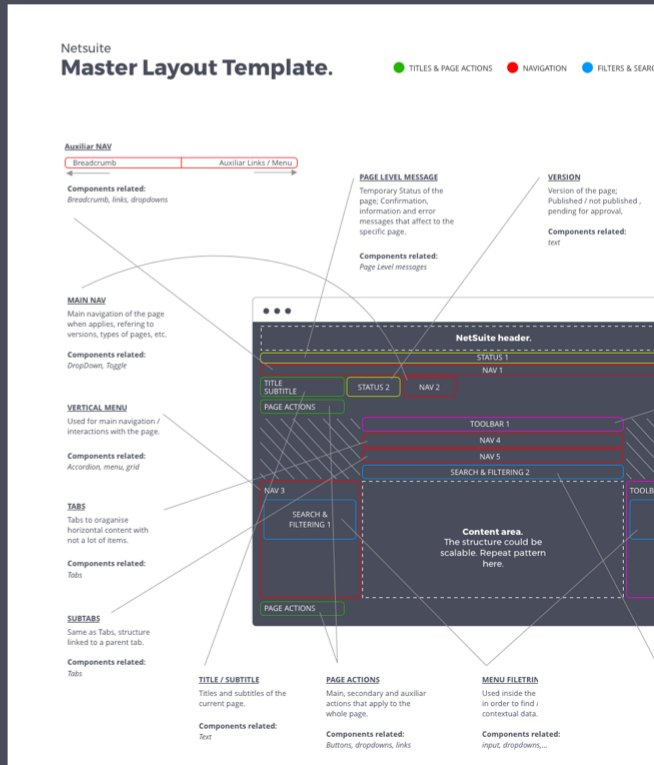

Unifying a fragmented enterprise UI into one shared design language.

At Oracle NetSuite I led design for the Central UI Team, inside the Global Innovation group, with four interaction designers reporting to me locally.
The mission: define, design and launch a design system to refine NetSuite’s UI framework, across a large enterprise product with no shared design language.
NetSuite’s product teams needed one UI language, because each team was solving forms, navigation, headers and search on its own, each slightly differently.
There was no shared IA, no canonical layout template and no agreed pattern for the basics. And a new UI couldn’t simply replace the old one: it had to live next to thousands of legacy pages.
I had no authority over the product teams whose UI I was trying to unify. The influence had to come from the artefacts and the process, not a mandate.
We started with the product’s architecture, not its visuals: which kinds of pages exist (dashboards, forms, document pages, app pages), which shell holds them, and how legacy and new UI would coexist. Around it, three workstreams: user-centric design, the design system itself, and product experiences.

Weekly one-week sprints and catalog ideation with the design team pressure-tested every pattern before it was final: what the system had to feel like, and what it needed in six months, one year and five years.


Design principles and guidelines sit underneath the patterns, so every decision traces back to a stated reason, not a preference.

The master layout template breaks every NetSuite page into the same zones: auxiliary navigation, main navigation, vertical menu, tabs, title, page actions, page-level messages, version, search and filtering, and a content area built to repeat.
Each zone names the components it’s allowed to use. That turned “what should this page look like?” into a lookup instead of a debate.
On top of the template, we defined the components every team kept rebuilding: the forms layout, the header (logo, partner and customer logos, global search, nav icons and nav menu), the logo lockup, global search and the navigation menu.
A shared pattern library for teams that had been making the same decisions one by one. I led it without authority over the teams adopting it.
The same pattern thinking carried into NetSuite Next, where we defined experience patterns on top of Oracle’s Redwood design system. And later into Garden at Lodgify, this time with the authority to make it the default.